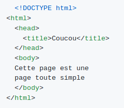

Alan
Ce que j'ai appris
- Les bases du Terminal
- Quelques notions du langage Markdown
- Les commandes basiques Terminal
- Gérer les dossiers
- mkdir "Exemple" Pour créer un dossier
- rm "Exemple"Pour supprimer un dossier
- cd ExemplePour choisir le fichier
- Création de branches
- Création d'un repo
- Intervenir sur les projets en groupes via :
- Push
- Pull
- Add
Suivi des consignes
Comment pointer vers un lien ?
Ce site explique Commande Markdown
Maintenant intégrons la photo d'un canard, car c'est beau les canards...


Et pour la coloration syntaxique, voici un bout de code :
